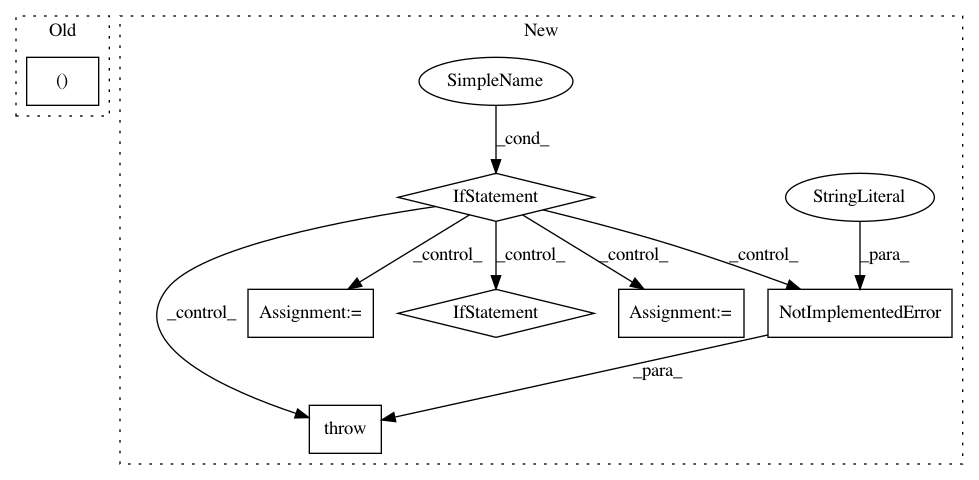

fff2b2fcaad05ad7fd020e3cf96a8edd49d62084,arviz/wrappers/base.py,SamplingWrapper,log_likelihood__i,#SamplingWrapper#Any#Any#,135
Before Change
log_like_idx = _wrap_xarray_ufunc(
lambda pars: self.point_log_likelihood(excluded_obs, pars),
idata__i.posterior.to_array(),
func_kwargs={"out": np.empty((nchains, ndraws))},
ufunc_kwargs={"n_dims": 1, "ravel": False},
input_core_dims=[["variable"]],
)
After Change
Log likelihood of ``excluded_obs`` evaluated at each of the posterior samples
stored in ``idata__i``.
if self.log_lik_fun is None:
raise NotImplementedError(
"When `log_like_fun` is not set during class initialization "
"log_likelihood__i method must be overwritten"
)
posterior = idata__i.posterior
arys = (*excluded_obs, *[posterior[var_name] for var_name in self.posterior_vars])
if self.is_ufunc:
ufunc_applier = apply_ufunc
else:
ufunc_applier = _wrap_xarray_ufunc
log_lik_idx = ufunc_applier(
self.log_lik_fun,
*arys,
kwargs=self.log_lik_kwargs,
In pattern: SUPERPATTERN
Frequency: 3
Non-data size: 7
Instances
Project Name: arviz-devs/arviz
Commit Name: fff2b2fcaad05ad7fd020e3cf96a8edd49d62084
Time: 2021-01-13
Author: oriol.abril.pla@gmail.com
File Name: arviz/wrappers/base.py
Class Name: SamplingWrapper
Method Name: log_likelihood__i
Project Name: GPflow/GPflow
Commit Name: bb099e4c5b48329b842dbf9884f086f7b514bc0a
Time: 2020-03-16
Author: dutordoirv@gmail.com
File Name: gpflow/models/model.py
Class Name: GPModel
Method Name: predict_f_samples
Project Name: zegami/image-similarity-clustering
Commit Name: dcd82a95dee25d14cdf112b5be18e6dc0a19c7eb
Time: 2020-03-18
Author: douglawrence0010@gmail.com
File Name: cli.py
Class Name:
Method Name: main